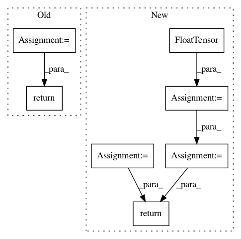

37847c77889e39143034af9fe0d4b92bc74e992a,torch_geometric/datasets/utils/ply.py,,read_ply,#Any#,6
Before Change
// Conver to torch tensors.
vertices = torch.FloatTensor(vertices)
faces = torch.LongTensor(faces)
return vertices, faces
After Change
x = torch.FloatTensor(plydata["vertex"]["x"])
y = torch.FloatTensor(plydata["vertex"]["y"])
z = torch.FloatTensor(plydata["vertex"]["z"])
pos = torch.stack([x, y, z], dim=1)
input = torch.ones(pos.size(0))
face = torch.LongTensor(make2d(plydata["face"]["vertex_indices"]))
index = edges_from_faces(face)
return Data(input, pos, index, None, None)
In pattern: SUPERPATTERN
Frequency: 3
Non-data size: 7
Instances
Project Name: rusty1s/pytorch_geometric
Commit Name: 37847c77889e39143034af9fe0d4b92bc74e992a
Time: 2018-03-02
Author: matthias.fey@tu-dortmund.de
File Name: torch_geometric/datasets/utils/ply.py
Class Name:
Method Name: read_ply
Project Name: facebookresearch/pytext
Commit Name: d994b4a82f15085a9d4c35e7b3635ec19d4d5e3e
Time: 2019-06-21
Author: kushall@fb.com
File Name: pytext/loss/loss.py
Class Name: KLDivergenceBCELoss
Method Name: __call__
Project Name: rusty1s/pytorch_geometric
Commit Name: d8a075668b6e9cdf4c08f6c7285e5c7d2fbf5332
Time: 2017-10-17
Author: matthias.fey@tu-dortmund.de
File Name: torch_geometric/graph/geometry.py
Class Name:
Method Name: edges_from_faces